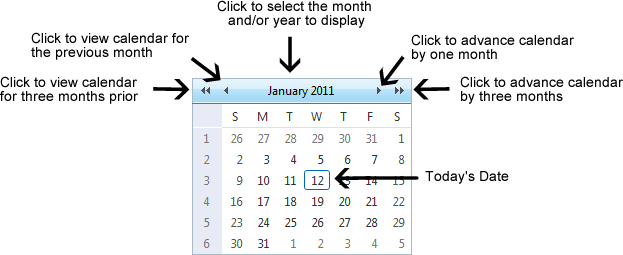
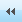
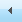
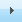
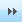
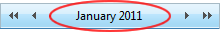
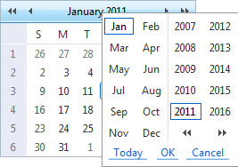

Working with the RADCalendar
The RADCalendar is date selection tool which is used when viewing link tracking reports within the TelerikEditorProvider for the RTE.

Selecting a Date
Step One - View the required Month/Year in Calendar
- Click the Calendar button. This opens the RADCalendar. Here's an overview of the date selection options available for the RADCalendar:
- View Calendar for Another Month:
- Click the
 button view calendar three months previous
- Click the  button to view calendar for the previous month
- Click the  button to advance the calendar by one month
- Click the  button advance the calendar by three months
- View Calendar for Today:
Click the Month/Date  above the calendar.
- Click a month to view that month for the selected year.
- Click the Today link.
- View Calendar for Another Month/Year:
- Click the Month/Date above the calendar.
- Click a month to view that month for the selected year.
- Click a different year to view if required.
- Optional. If the required year is not displayed, then click either the ll or rr buttons below the displayed years. This displays the previous or next ten years respectively.
- Click the OK button to view the calendar for the selected month/year.
Tip: Click the Cancel button to cancel any selection and return to calendar.

Step Two - Selecting the Date
- Click on a date in the calendar to select it. This closes the pop-up window and displays the selected date in the associated field.
Related Topics:
-
"Viewing Link Tracking Report"